This lab is the fourth session of the AIOps Enablement Series for ANZ Bank. This track focuses on the Automate Delivery, which relates to how you could integate Dynatrace with orchestration tools to create Progressive Delivery.

Throughout these labs, we will be using the deployment approach / strategies based on the example below.
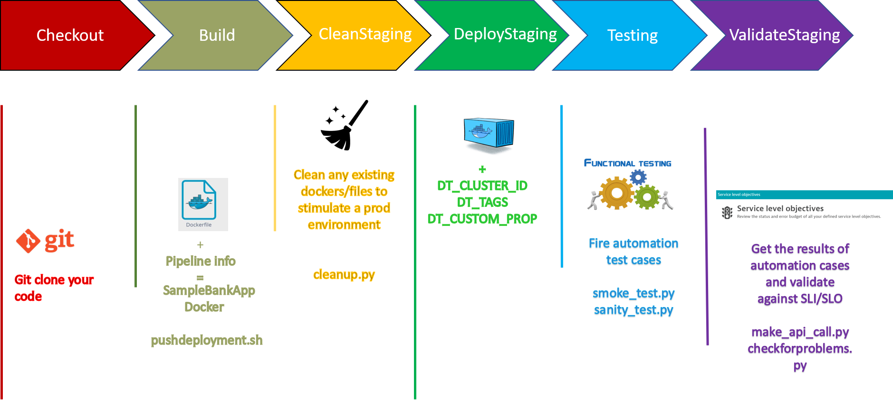
What You'll Learn
- Integrate Jenkins with Dynatrace
- Setup Docker Pipeline in Jenkins
- Leveraging Auto tags Rules for pipelines in Dynatrace
- Creating tags from Build Stages
Other useful commands:
- To view all docker containers:
docker ps -a - To view the downloaded images on localhost:
docker images - To remove a particular image:
docker rmi <IMAGE-NAME> - To stop a docker:
docker stop <CONTAINER-ID> - To remove a docker:
docker rm <CONTAINER-ID> - To run a docker in interactive bash:
docker run -it <CONTAINER> /bin/bash - To delete all the unused images:
docker system prune -a -f - To pull a particular image:
docker pull <docker-image> - Jenkins pipeline: Command:
https://github.com/nikhilgoenkatech/JenkinsBankApp
Log back into your Dynatrace environment and check if OneAgent is still running.
On your left navigation, select Hosts and you should still see a monitored EC2 host.
Check if OneAgent is running
Log back into your Dynatrace environment and check if OneAgent is still running.
On your left navigation, select Hosts and you should still see a monitored EC2 host.
Running Jenkins in Docker
The Jenkins docker would already be present in your ubuntu instances and can be seen with "docker images"

To start the Jenkins docker, execute docker run -d --network mynetwork --name Jenkins-Dynatrace -p 8020:8080 -v /var/jenkins:/var/jenkins_home -v /var/run/docker.sock:/var/run/docker.sock nikhilgoenka/jenkins-dynatrace-workshop In our last session, we mounted the docker data in host-volume ‘/var/jenkins', so our pipeline and other jenkins data would be restored from that directory.
Stop/Remove all sample-bank-apps
Verify if you have any old docker(s) for sample-bank-app in your environment using docker ps -a
If output of above command shows any docker with name "SampleOnlineBankStaging"; remove them by executing docker stop SampleOnlineBankStaging followed by docker rm SampleOnlineBankStaging
Similarly, if you have any production dockers, remove them by executing docker stop SampleOnlineBankProduction followed by docker rm SampleOnlineBankProduction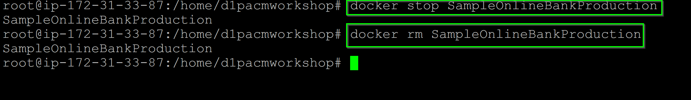
Login into Jenkins
Login into Jenkins through web browser and access the Jenkins URL via <IP address>:8020 with username admin and password dynatrace

Configure Environment Variables
As AWS instance was restarted, Public IP-address may have changed, so look for the Properties and Tags on dynatrace>Hosts and you will get a list of various metadata associated with the host created. Locate the Public IP Address and copy its value.

Further, change the value of environment variable created earlier to reflect the new IP-address, as below:
Within Jenkins, click on Manage Jenkins > Configure System
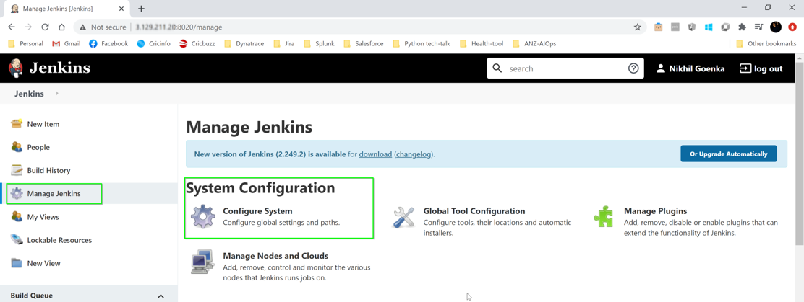
- Look for environment variables as per image below:
- Modify the following environment variables:
- PUBLIC_IP

During the build, we will create a synthethic monitor, so make sure the token that has been imported in Jenkins has appropriate permissions as below. To verify token permission, follow the steps below:
- Go to Settings > Integration > Dynatrace API > Generate Token
- Select the token that was imported into Jenkins.
- Make sure it has the permission to Create and read synthetic monitors
- If not, toggle Create and read synthetic monitors, locations, and nodes.
- Click on Save

Simulate SLA/SLO
To simulate SLA/SLO, select one of the requests from the sample-bank-app by navigating to Transaction & Services > node-bank > View dynamic requests and select timeframe as Last 7 days. 
Mark the request as key-request as shown below. 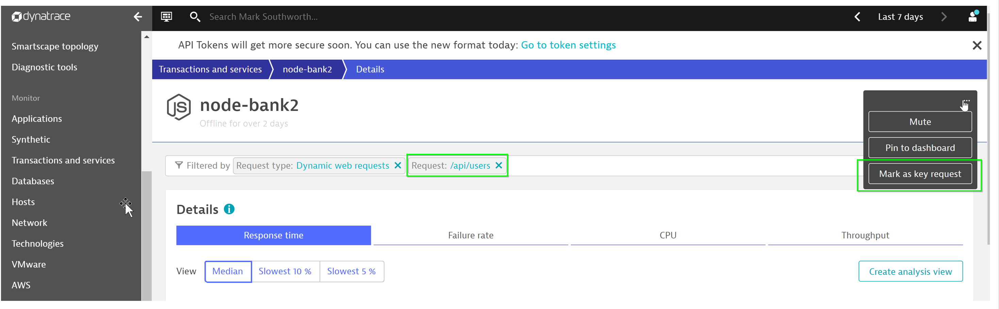
Now, let us configure the request to have a hypothetical threshold (which will be your SLA/SLO). To do so, navigate to Transaction & Services > node-bank > Edit > Anomaly detection. 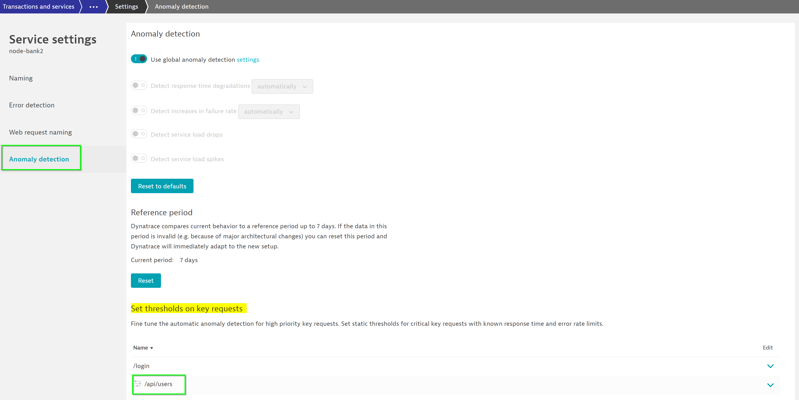
Set the threshold to a low value say (eg. 2ms) so that a problem will be generated. 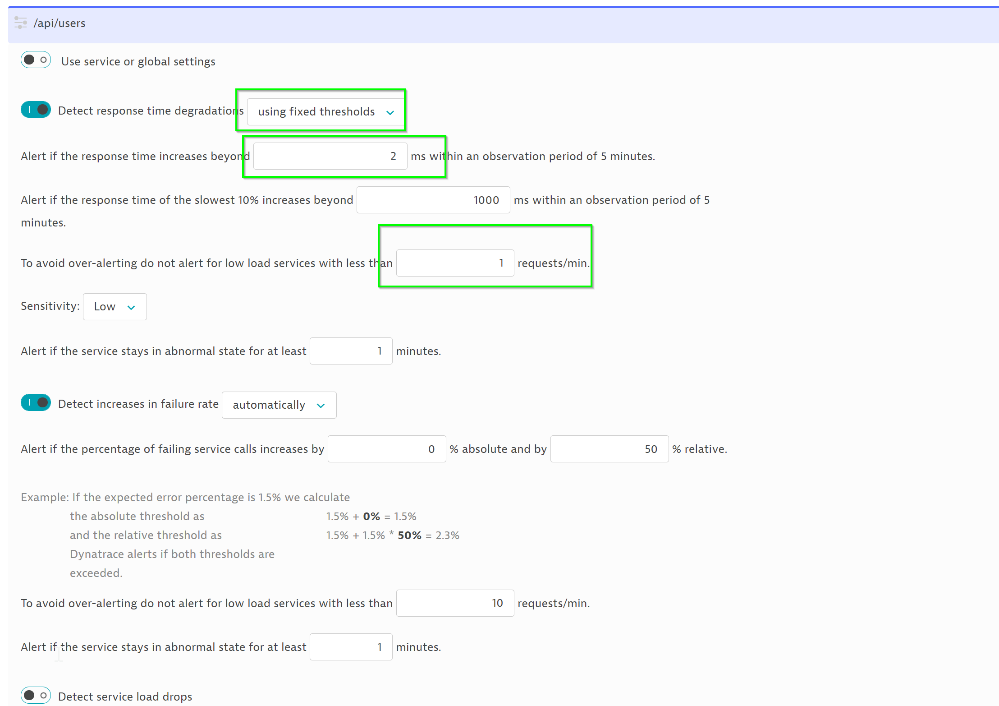
Trigger a new Jenkins-build
Within Jenkins, navigate to Homepage and click on Build Now as seen below 
Build failure
The build is likely to fail with a problem highlighting the key-requests has exceeded configured threshold. A sample problem looks like below: 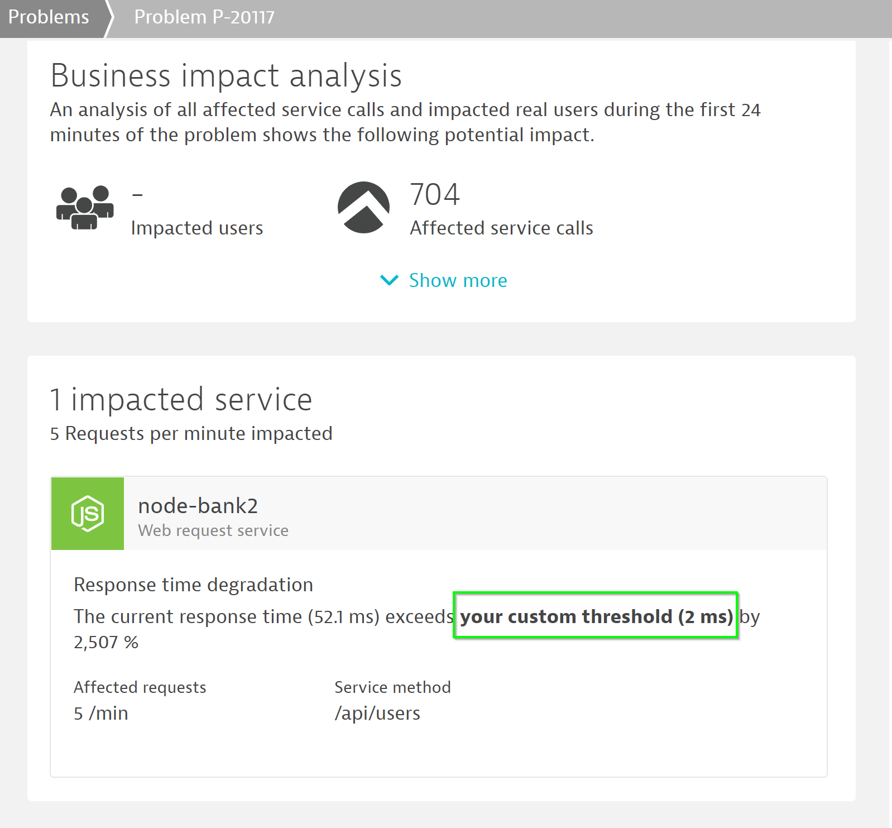
On the right-hand side of the problem generated, DT would highlight the probable root-cause and the associated tools that can be used to analysis the issue. 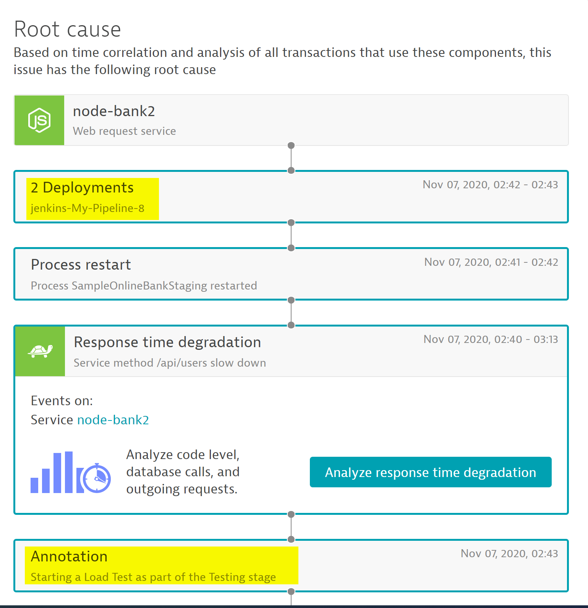
As one problem would be open, our pipeline would be stalled with Staging not proceeding to Production. So in order to proceed, manually close the problem within dynatrace. 
From Jenkins, trigger the build again.
In Jenkins, Click on individual stages > Logs to view details involved in that step. 
Understanding the tags in more detail
Referring to the Jenkins File, the following code handles the pushing of Jenkins deployment information into Dynatrace.
dir ('dynatrace-scripts') {
// push a deployment event on the host with the tag JenkinsInstance created using automatic tagging rule
sh './pushdeployment.sh HOST CONTEXTLESS JenkinsInstance ANZ_ACM_Security_Group ' +
'${BUILD_TAG} ${BUILD_NUMBER} ${JOB_NAME} ' +
'Jenkins ${JENKINS_URL} ${JOB_URL} ${BUILD_URL} ${GIT_COMMIT}'
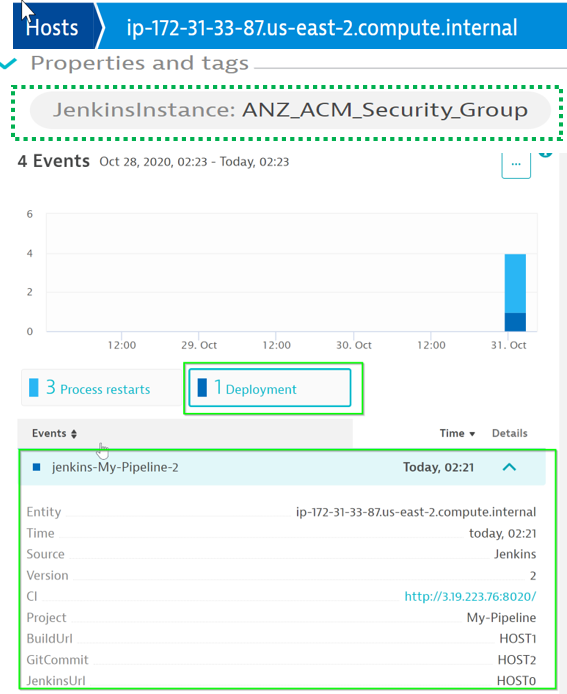
Referring to the Jenkins File, the following code handles the pushing of deployment information into Dynatrace. This step utilizes environment varibles such as DT_CLUSTER_ID, DT_TAGS and DT_CUSTOM_PROP
stage('DeployStaging') {
// Lets deploy the previously build container
def app = docker.image("sample-bankapp-service:${BUILD_NUMBER}")
app.run("--network mynetwork --name SampleOnlineBankStaging -p 3000:3000 " +
"-e 'DT_CLUSTER_ID=SampleOnlineBankStaging' " +
"-e 'DT_TAGS=Environment=Staging Service=Sample-NodeJs-Service' " +
"-e 'DT_CUSTOM_PROP=ENVIRONMENT=Staging JOB_NAME=${JOB_NAME} " +
"BUILD_TAG=${BUILD_TAG} BUILD_NUMBER=${BUILD_NUMBER}'")

Review changes in Dynatrace
You can see the changes reflected in SampleOnlineBankStaging Process View

You also can see the changes reflected in node-bank2 Service View

Automate/Continuous Feedback from Dynatrace
stage('Testing') {
// lets push an event to dynatrace that indicates that we START a load test
dir ('dynatrace-scripts') {
sh './pushevent.sh SERVICE CONTEXTLESS DockerService SampleOnlineBankStaging ' +
'"STARTING Load Test" ${JOB_NAME} "Starting a Load Test as part of the Testing stage"' +
' ${JENKINS_URL} ${JOB_URL} ${BUILD_URL} ${GIT_COMMIT}'
}
// lets run some test scripts
dir ('sample-bank-app-service-tests') {
// start load test - simulating traffic for Staging enviornment on port 3000
sh "rm -f stagingloadtest.log stagingloadtestcontrol.txt"
sh "python3 smoke-test.py 3000 200 ${BUILD_NUMBER} stagingloadtest.log ${PUBLIC_IP} SampleOnlineBankStaging"
archiveArtifacts artifacts: 'stagingloadtest.log', fingerprint: true
}
// lets push an event to dynatrace that indicates that we STOP a load test
dir ('dynatrace-scripts') {
sh './pushevent.sh SERVICE CONTEXTLESS DockerService SampleOnlineBankStaging '+
'"STOPPING Load Test" ${JOB_NAME} "Stopping a Load Test as part of the Testing stage" '+
'${JENKINS_URL} ${JOB_URL} ${BUILD_URL} ${GIT_COMMIT}'
}
 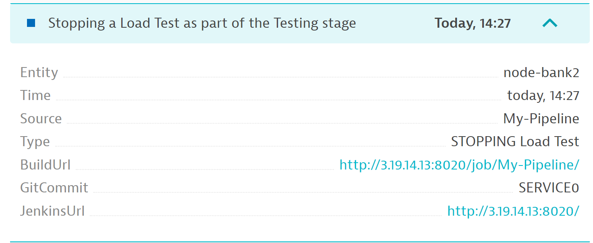
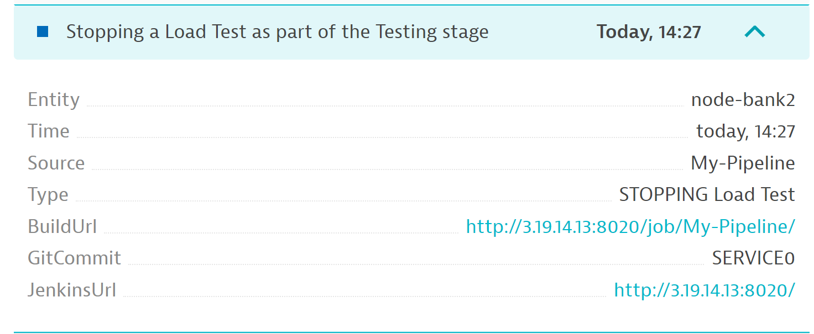
Automate UI tests using Synthetic browsers
// Create a sample synthetic monitor so as to check the UI functionlity
sh './synthetic-monitor.sh Staging '+ '${JOB_NAME} ${BUILD_NUMBER}'
The script would leverage API to create a synthetic browser and perform the different user-actions. To view the synthetic browser, navigate to Synthetic within Dynatrace
In an event of any issues with UI funcitonality, DT would automtically trigger a problem, thereby halting the erroneous build to be shipped to production.
Dashboard creation
Leveraging the dashboard API, a dashboard is generated with information of the health metrics of hosts/services/requests invoked duringJenkins pipeline. These can be used to give a quick sneak peek of any issues to the operation/devOps team.
// Create a sample dashboard for the staging stage
sh './create-dashboard.sh Staging '+ '${JOB_NAME} ${BUILD_NUMBER}'
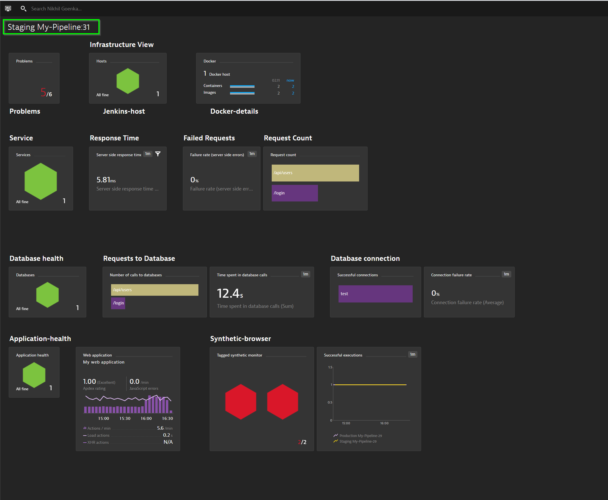
We hope you enjoyed this lab and found it useful. We would love your feedback!